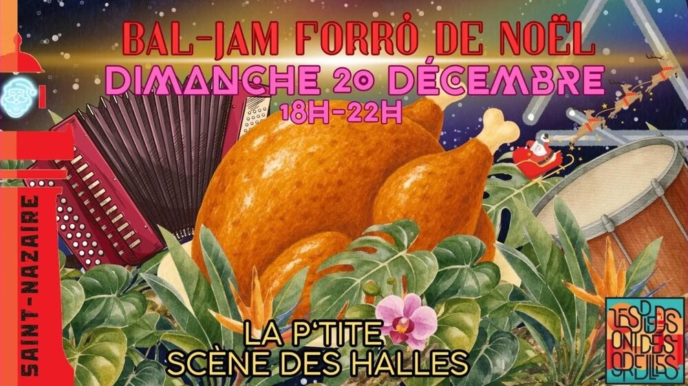

Jam forró de Noël

Lieu : La P'tite Scène des Halles, 14 place du Commerce, Saint-Nazaire
On se retrouve pour une dernière danse avant les fêtes ! Dimanche 20 décembre, de 18h à 22h. Gandaia sera de la partie, et la scène est ouverte aux musicien·nes qui ont envie de venir jouer !